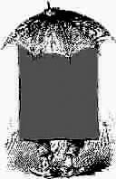

言 论
如果你想做成一件事，有三点很重要：合作、尝试和机遇。合作是基本的，是否去尝试取决于你自己，至于机遇——据我所知，一直都在那里。
——好莱坞明星葛丽亚·嘉逊
假如生命是乏味的，我怕有来生；
假如生命是有趣的，我今生已是满足的了。
——冰心
我一直财源滚滚，如有天助，这是因为上帝知道我会把钱返还给社会。
——约翰·戴维森·洛克菲勒
今天培养孩子如此之难的理由之一是，你刚教会他说真话，又不得不开始教他闭嘴了。
——面对社会生活中各种各样的潜规则，家长在教育孩子时苦恼不已
记忆像一条狗，躺在它怡然自得的地方。
——荷兰作家西斯·诺特波姆的诗里说
如果我还他一个童年，那我就要欠他一个成年。
——面对就业形势严峻、竞争压力大的现实，中国的孩子很苦，一个中国母亲在面对英国记者采访时说
当工作高于一切的时候，生活中的其他内容就不再是本来面目，而是沦为消耗时间的“蠢物”，比如吃饭和睡觉。
——英国《金融时报》专栏作家薛莉说
幸福就是连接痛苦与痛苦之间的环，是你吃完第一个馒头之后还有第二个馒头等着你。
——王晓峰，《三联生活周刊》主笔
没有个性的大学绝对不是好大学，那只是大公司的连锁店。
——华东师范大学历史系教授许纪霖坦言，目前中国的大学越来越千校一面
一直以来，我可能是最为幸运的人，我也愿意帮助那些不幸没有更好生活的人。
——比尔·盖茨
我们这些年轻人起早贪黑，真是上班拖着一身的睡意，顾不上吃饭；下班拖着一身的疲惫，顾不上休息……如果我们让了座，对得起道德，对不起自己；如果不让，对得起自己，对不起道德。
如果年轻人嚷嚷着对老人卡进行限制，就会失去人类博爱、善良的根本。
——在上下班高峰期，许多持老年优惠卡的老年人与年轻人一起挤车。是否在这一时段取消老年卡优惠，引发网上激烈争论
现在，中国青少年体质可以概括为“硬、软、笨”。硬，即关节硬；软，即肌肉软；笨，即长期不活动造成的动作不协调。
——北师大体育与运动学院院长毛振明概括说。调查显示，最近20年来，我国青少年的体质持续下降
待富贵人，不难有礼而难有体；待贫贱人，不难有恩而难有礼。
——《小窗幽记》
许多人花没挣到的钱，买自己不想要的东西，向不喜欢的人炫耀。
——影星威尔·史密斯批评时下一些年轻人的生活方式
计算企业家的财富，永远是一个寻找谜底的过程。
——富豪榜制榜人胡润最近在成都大倒苦水，在中国想多了解富豪的财富及挖掘一些新富豪非常困难
现在的博士学位对大多数青年教师来说，就好比是脚底的一粒米，不拿不舒服，拿了又不能吃。
——业内人士指出，大学青年教师已经成了考博主力，但博士学位的功利性很突出
母亲的心是女儿的天堂。
——意大利谚语
他们似乎看不懂交通信号，总期望路上的其他人有超自然的能力。
——英国一项调查发现，宝马车的车主因其傲慢无礼的态度被人们认为是最糟糕的司机
别说爱情会老，别只会在摇头时微笑，甜蜜的时光只有你我知道，风在林梢鸟儿在叫，爱会上瘾，爱是安眠药，梦里花落知多少，可不可以不要醒得太早。
——卡洛